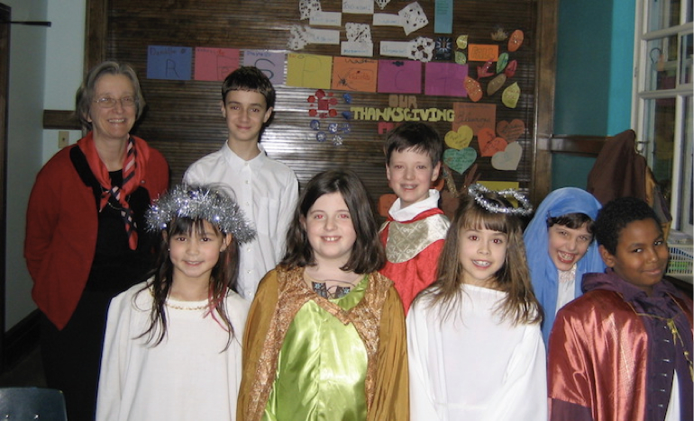

-1-MasterItem.svg)
Stories of Westminster United Church & its People / Page
175
Westminster Kids’ Choir, 1994-2009
Director: Helen La Rue
Accompanists: Margaret Harrison, 1994-1996
Len La Rue, 1997-2009
The original founding members of the Kids’ Choir were Scott Arnould, Daniel and Leila Boch-
Freeman, Megan Carruthers, Laura Cobus, Ian and Gillian Legrand, Robert McMahon,
Paul Taylor
and Amanda Tiwari. We met upstairs every Sunday 9:30 to 10:00 from Sept to May. The Membership
ranged from six to twelve singers over the next fifteen years. We sang once a month during the
worship service and always at the early
Christmas Eve service as well as many musicals
over the years. We also were invited to sing at
services at Riverview, Lions Place, and Poseidon
Centre and a Christmas program at the Festival
of Trees in 2000. One thing remained constant
— donut eggs as a treat at the end of practice!
There was an old upright piano at the beginning
which was replaced by a lovely piano received
from the estate of Donald Smith in 2005. It was
always lovely to hear the young voices gain
confidence and strength during the year. At
least two of the members, Robert McMahon
and James Campbell went on to study voice as adults. Glen Harrison, the Senior
Choir and the
congregation were always so supportive and encouraging. On two occasions we were
invited
to sing a combined anthem with the Senior Choir which was a huge thrill for the
kids.

Above: the 2004 production of
What Child Is This?
Director Helen La Rue in the back row left.
Music at Westminster